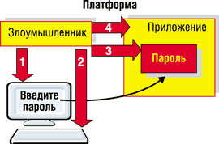
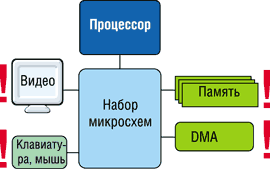
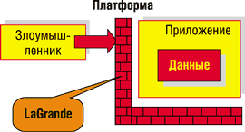
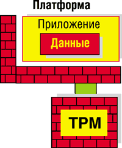
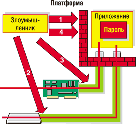
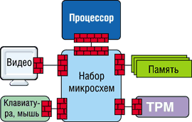

Виктор Рудометов,
разработчик ПО компании Digital Design, Microsoft Certified
victorr@digdes.com
В октябре 2003 года в Москве во второй раз состоялся Intel Developer Forum, традиционно проводимый в форме выездных сессий в ведущих странах мира два раза в год - весной и осенью. На этом крупнейшем международном форуме разработчиков аппаратного и программного обеспечения ведущие специалисты отрасли обсуждают перспективные направления ее развития, а также анализируют возможности существующих и будущих полупроводниковых и компьютерных технологий.
Еще в сентябре 2003 г., на форуме IDF Fall в Сан-Хосе (Калифорния, США), Пол Отеллини, президент и директор по операциям (Chief Operating Officer) Intel, отметил, что корпорация планирует в ближайшем будущем активно развивать, совершенствовать и продвигать на рынок следующие технологии: Hyper-Threading Technology (HT); Centrino Mobile Technology (CMT); LaGrande Technology (LT) и Vanderpool Technology (VT).
LaGrande - выход в свет
LaGrande - это технология, обеспечивающая сравнительно высокий уровень безопасности на аппаратном уровне. Подразумевается, что новые наборы микросхем, процессоры и другие элементы компьютера будут "сотрудничать" с ПО для предотвращения атак на компьютерные системы, цель которых - получить несанкционированный доступ к конфиденциальным данным.
В рамках IDF Fall Intel провела первую презентацию этой технологии, показав некоторые особенности ее работы и направления развития. В качестве примера возможных путей взлома компьютерной системы использовались протоколирование нажатий клавиш на клавиатуре, слежение за видеобуфером, анализ дампа памяти. Все три смоделированные атаки на систему, в которой не применялась новая технология LaGrande, привели к успешному взлому этой системы, и в результате воображаемый хакер получил ожидаемые номера кредитных карточек. Однако при использовании для защиты системы фирменной технологии LaGrande предпринятая атака потерпела полное фиаско. К сожалению, тогда в докладе не уточнялось, как именно работает новая система и против каких атак она эффективна, а против каких - нет. Тем не менее в целом стало ясно, что крупнейшие компании отрасли всерьез занялись проблемами безопасности. Это не могло не радовать многочисленных пользователей компьютерных систем, часть из которых на собственном печальном опыте убедились в необходимости средств защиты от несанкционированного доступа к конфиденциальной информации.
В процессе работы московского IDF специалистам стали доступны некоторые подробности новой технологии компьютерной защиты. В рамках направления "аппаратное обеспечение" на форуме состоялся семинар, целиком посвященный технологии LaGrande. Провел его Дэвид Граурок, ведущий специалист по системам безопасности Intel и один из авторов новой концепции безопасности. Добавим, что он тесно сотрудничает с компаниями-разработчиками ПО с целью создания полного аппаратно-программного решения LaGrande.
Следует отметить, что уже не первый год специалисты отрасли предпринимают попытки увеличить уровень безопасности как отдельных узлов, так и компьютерных систем в целом. Эти усилия, как известно, принесли в ряде случаев довольно хорошие результаты. Однако разработанные эффективные, но, как правило, сложные средства защиты информации сравнительно дороги для домашних пользователей и малых предприятий. Что касается простых и дешевых программно-аппаратных средств, то предоставляемого ими уровня безопасности, к сожалению, во многих случаях недостаточно. Постоянно растущая частота атак на информационные ресурсы пользователей указывает на сравнительно низкий уровень защиты компьютерных систем. Необходимо учитывать и то обстоятельство, что с каждым днем повышается изощренность и эффективность доступных для хакеров средств организации всевозможных атак на системы индивидуальных и корпоративных пользователей, целью которых становится несанкционированный доступ к конфиденциальным данным и даже частичное или полное нарушение работоспособности систем.
Для борьбы с этой опасностью Intel совместно с другими гигантами индустрии и создает новую концепцию информационной безопасности. К слову сказать, технологию LaGrande поддерживают такие крупные фирмы, как Microsoft, Fujitsu, NEC, HP, Fujitsu-Siemens, IBM и т. д.
Планируется, что новая технология защитит конфиденциальные данные на персональном компьютере, проводные, беспроводные и удаленные средства связи, а также всевозможные коммерческие транзакции, включая те, что связаны с электронной коммерцией и финансовой деятельностью. Подразумевается, что специализированные средства защиты будут предотвращать программные атаки на систему и аппаратно-программные элементы сети. Кроме того, разрабатываемые средства будут ставить барьеры непреднамеренному раскрытию информации, что довольно часто случается по причине некачественного ПО. При этом в ходе доклада подчеркивалось, что значительную часть аппаратных атак разрабатываемая система безопасности не сможет предотвратить. В качестве примера таких атак можно привести, например, взлом сейфа, в котором находится информация о пароле, или вскрытие корпуса ПК.
Естественно, потенциальных пользователей не могут не волновать такие аспекты нововведений, как легкость использования, управляемость, конфиденциальность, обратная совместимость, влияние на производительность и универсальность. Действительно, чрезвычайно сложно внедрять новую, пусть даже перспективную технологию, если при этом придется переписывать большую часть ПО, а пользователям новых систем для работы придется штудировать несколько толстых книг. Успешность новой технологии, естественно, зависит и от результирующей производительности, которая из-за введения многочисленных циклов многоуровневого контроля может существенно снизиться. Поэтому при создании системы учитываются возможные негативные последствия, с тем чтобы она была максимально свободна от перечисленных недостатков.
Возможности защиты
Один из самых распространенных видов атак - атака на пароль (рис. 1). Проследим ее развитие на примере. Предположим, пользователь хочет получить авторизованный доступ к приложению. Обычная последовательность действий такова: на экране выводится окно для ввода пароля, пользователь вводит затребованный пароль, этот пароль проверяется и в случае корректного ввода предоставляется доступ. При этом существует несколько вариантов атаки на систему.
|  | Рис. 1. Атака на пароль.
|
Поддельный экран для ввода пароля. Злоумышленник предлагает пользователю, например, созданное им самим программное окно на экране дисплея. Ничего не подозревающий пользователь вводит пароль, который через ложную программу попадает к атакующему.
Считывание пароля с клавиатуры. На пользовательский компьютер устанавливается специальная программа, которая регистрирует все нажатия клавиш (keyboard sniffer), а затем посылает эти данные злоумышленнику.
Считывание пароля из памяти. Ввод и проверка пароля в системе организованы программно, следовательно, пароль попадает в оперативную память и его можно прочитать непосредственно из этой памяти.
Модификация приложения для игнорирования ввода пароля. Злоумышленник подправляет код программы так, чтобы окно авторизации просто не появлялось.
Результат всех перечисленных типов атак одинаков - злоумышленник получает пароль и доступ к необходимому приложению или ко всей системе со всеми ее ресурсами и конфиденциальными данными.
В последнее время довольно часто описанные выше или похожие атаки оказываются успешными из-за общеизвестных, распространенных уязвимостей современных архитектур и ПО для персональных компьютеров. Это, например, следующие особенности архитектуры (рис. 2).
|  | Рис. 2. Уязвимые места в архитектуре компьютера.
|
Экран пользователя. Доступ к буферу графических кадров. Результат: ПО "видит" и/или изменяет то, что видит пользователь.
Пользовательские устройства ввода. Доступ к данным, вводимым через компьютерную клавиатуру и мышь. Результат: ПО "видит" и/или изменяет то, что вводит пользователь.
Процессор/память. Ring 0 доступ к памяти. Результат: ПО проникает в память, находит, захватывает и меняет настройки, данные, пароли, ключи и т. д.
DMA (Direct Memory Access). Доступ к памяти через контроллер DMA. Здесь следует напомнить, что DMA - прямой доступ к памяти - создан для повышения производительности компьютеров. К сожалению, наличие DMA приводит к снижению уровня безопасности. Результат: ПО получает доступ к защищенной памяти напрямую через контроллер DMA. Даже если процессор будет защищен, DMA позволит обратиться к памяти, минуя процессор, открыв тем самым неконтролируемые пути для возможных атак.
Таким образом, программные атаки злоумышленников способны обеспечить считывание содержимого памяти с целью доступа к конфиденциальной информации. Кроме того, эти атаки могут иметь целью модификацию памяти (значений данных и кодов программ), манипулирование вводом-выводом, изменение запросов на информацию. Для борьбы с перечисленными и некоторыми другими опасными действиями, а также для снижения угрозы в целом были разработаны четыре основных требования к проектированию аппаратно-программной платформы LaGrande:
- защищенное исполнение;
- аттестация;
- защищенное хранилище данных;
- доверительные каналы и пути передачи информации.
Защищенное исполнение
В основе защищенного исполнения лежит понятие "кирпичной стены" (Brick Wall) - непреодолимого барьера для атак хакера, пытающегося "взломать" приложение (рис. 3).
|  | Рис. 3. "Кирпичная стена" как защита кода приложения и данных.
|
Защищенное исполнение не позволяет злоумышленнику получить доступ к ресурсам приложения, включая контроль над процессом выполнения и все, что с ним связано. Кроме того, от злоумышленника защищается информация о программных потоках, ассоциированных с выполняемой программой страниц памяти, и т. д. При этом на аппаратном уровне разделяются процесс исполнения кода, используемая память и устройства компьютера. Лишь аппаратное разделение гарантирует, что программные средства не смогут обойти этот вариант защиты компьютерных ресурсов и данных.
Аттестация
Как известно, пользователи готовы доверять конфиденциальную информацию лишь безопасной платформе. Устройство аттестации поможет выделить компьютер, в котором встроена защита, среди других, даст ему возможность сообщить о своих свойствах. При этом указанный механизм обязан быть надежным и поддающимся проверке.
Следует отметить, что аттестационному устройству нужна гарантия, что механизмы хранения и оповещения должным образом защищены. Информация о том, каким образом создавалась "кирпичная стена", позволяет судить о защищенных ею приложениях.
Для аттестации требуются:
- точная идентификация;
- хранение информации об идентификации;
- поддающееся проверке сообщение об идентификации.
Эти возможности обеспечивает модуль TPM (Trusted Platform Module), предоставляющий платформе аттестационное устройство. Этот модуль имеет генератор случайных чисел, гарантирует криптографическую уникальность сообщений, предоставляет хранилище для защищенной платформы. К этому списку обычно добавляют еще надежность хранения данных, не требующую питания. Вся информация о способе построения "кирпичной стены" хранится именно в модуле TPM. Для реализации технологии LaGrande требуется версия TPM 1.2.
Таким образом, при аттестации происходит аппаратное подтверждение защищенности среды. Пользователь вводит новую конфиденциальную информацию лишь в среду, в защищенности которой он уверен.
Защищенное хранилище данных
Опечатанное хранение - это сочетание идентификации и шифрования. Опечатанные данные доступны только в том случае, когда необходимые данные присутствуют в TPM. Этот способ дает уверенность в том, что данные доступны только известной среде. Опечатывание данных в "кирпичной стене" гарантирует, что эти данные будут доступны только той же уникальной "кирпичной стене" (рис. 4). Изменение параметров барьера изменяет показатели идентификации и делает данные недоступными.
|  | Рис. 4. Защищенная платформа в целом.
|
Опечатанное хранилище гарантирует то, что доступ к конфиденциальной информации может быть осуществлен только из идентифицированной ранее среды.
Доверительный канал
Доверительный канал позволяет двум устройствам компьютера передавать данные с большой степенью уверенности, что эти данные не смогут быть изменены или считаны третьей стороной. Технология LaGrande на аппаратном уровне призвана создавать такие каналы, а операционная система, обеспечивающая поддержку данной технологии, должна использовать их для связи между приложениями и устройствами.
Ярким примером использования доверительных каналов в защищенной системе может служить доверительный ввод-вывод. При доверительном вводе в первую очередь создается доверительный канал между клавиатурой или мышью и управляющим приложением. Операционной системе придется использовать специальные процедуры для получения данных с устройства. При доверительном выводе канал создается уже между графическим приложением и адаптером дисплея. Только благодаря доверительным каналам пользователи смогут быть уверены в том, что их связь безопасна и осуществляется с "правильным" приложением, а не с тщательно замаскированной программой хакера.
Следует отметить, что для достижения поставленных целей необходимо будет перепроектировать устройства ввода-вывода. Таким образом, пользователям придется менять практически все аппаратное обеспечение, вплоть до клавиатуры, не говоря уже о видеоадаптере, процессоре и системной плате. Естественно, что необходима также высокая надежность выполняемых приложений для создания доверительного канала.
Для иллюстрации использования доверительного канала рассмотрим описанную выше атаку на пароль, но теперь с использованием технологии LaGrande (рис. 5).
|  | Рис. 5. Противодействие атакам.
|
Считывание пароля из памяти. Способ защиты: защищенное исполнение. Атакующему не удастся проникнуть к памяти. Использование защищенной памяти препятствует и тому, чтобы с помощью DMA можно было считывать или изменять защищенную память.
Считывание пароля с клавиатуры. При использовании доверительного ввода пользователь находится в безопасности.
Поддельный экран ввода логина. В этом случае необходимо задействовать доверительный вывод. При выводе на экран информации по незащищенному каналу пользователь будет об этом проинформирован.
Подмена приложения для игнорирования ввода пароля. Данная атака невозможна, если для приложения применяется защищенное исполнение.
Аппаратные компоненты LT
Рассмотрев некоторые особенности технологии LaGrande, можно убедиться, что соответствующих изменений потребуют большинство элементов аппаратно-программного обеспечения современного компьютера (рис. 6).
|  | Рис. 6. Защищенная архитектура компьютера.
|
Модифицированный вариант центрального процессора компьютера будет устанавливать политику использования защищенных вариантов оперативной памяти и допускать разделение доменов.
Для поддержки технологии LaGrande сравнительно много придется менять и в наборах микросхем системной логики. В микросхеме, выполняющей функции северного моста, необходимо реализовать управление защищенной памятью и организацию доверительного канала с графической подсистемой. Изменения претерпит и шина процессора FSB (Front-Side Bus). Следует отметить, что, несмотря на довольно значительные изменения алгоритмов работы с оперативной памятью, сами микросхемы и модули памяти не нуждаются в модификации.
Микросхема, выполняющая функции традиционного южного моста, будет устанавливать защищенные каналы работы с устройствами ввода.
Кроме перечисленных традиционных компонентов, в системе появится и новый элемент - TPM-модуль. В этом модуле будут храниться ключи, цифровые сертификаты и аттестационные удостоверения. Он же будет обеспечивать аутентификацию платформы в целом.
В заключение отметим, что технология LT - это универсальный набор аппаратных компонентов для процессоров, наборов микросхем и платформ. LaGrande создает аппаратную основу, помогающую защитить данные от программных атак. Используя хорошо известные безопасные сценарии, платформа с технологией LT обеспечивает более безопасную среду для важной деловой информации, транзакций и других бизнес-операций. В общем и целом, LaGrande - это модификация процессора и набора микросхем, модуль TPM и защищенный ввод-вывод. Однако за этим стоят множества сложнейших аппаратных и программных решений.